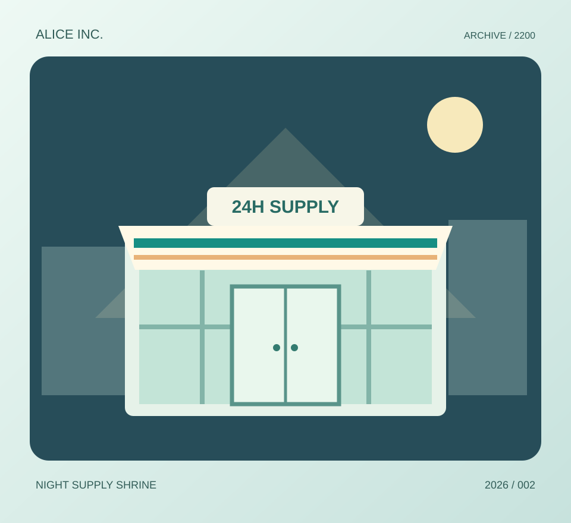

ARCHIVE 2026-001
携帯型祈祷板「スマートフォン」Portable Prayer Slab — Smartphone 毎日見つめていた黒い板。未来人には祈祷用具に見えたらしい。 The black slab humanity stared at daily. A ritual object, perhaps? 特別展示を見る / View exhibit →MUSEUM OF THE FUTURE · FEATURED ARCHIVES
Featured Archives — a small illustrated selection from the 100-exhibit collection.
2200年の研究者が、2026年の何気ない道具を少し勘違い。オリジナル図版と一緒に、2つの展示を見てみよう。
ARCHIVE 2026-001
携帯型祈祷板「スマートフォン」Portable Prayer Slab — Smartphone 毎日見つめていた黒い板。未来人には祈祷用具に見えたらしい。 The black slab humanity stared at daily. A ritual object, perhaps? 特別展示を見る / View exhibit →
ARCHIVE 2026-002
夜間食料神殿「コンビニエンスストア」Night Supply Shrine — Convenience Store 24時間灯りを絶やさない施設。未来の研究者は都市の灯台だと考えた。 Always illuminated, these stores looked like urban lighthouses. 100展示の中で見る / Open exhibit →